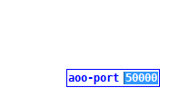
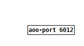
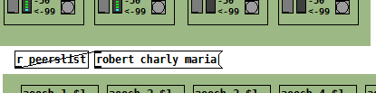
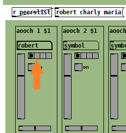

vrrl
Virtual Rehearsing Room Lucarda. A set of Pd abstractions to easily interface the AOO external.
This project is in beta testing status.
Use https://github.com/Lucarda/pd-vrrl to contact me.
AOO aims to share high quality audio with low latency over the internet or your LAN.
Click-here for a guide on installing Pd and AOO to your system.
Click-here to download vrrl.
Once your done with the above start Pd and open the vrrl.pd file
Later click-here to read about how to port-forward your router in case connection is not possible.
Setting your UDP port:
Click on menu edit /edit mode

Click on the box [aoo-port 50000] and select the 50000 number:
Change it to any number between 1025-65000 and click anywhere outside the box in the white space.
Click on menu edit /edit mode and unselect edit mode.
Click on menu file / save
Click on the box [aoo-port xxxx] to open the controls window.
Connect with other users:

-
Click on the box [symbol] and type your user name and hit ENTER. This will be the name that others in the group will use to identify yourself.
Do the same and create a password for your user.
-
Join or create a group.
If you are not creating the group provide the group/pass that were given to you.
-
Click on "connect" button.
If everything went good (see pic) you are now connected with other users in the group or you successfully created a new group.

The AOO server that you are connected keeps track of all computers in the group so that they can connect each other. The audio that you send or receive does not travel throw the AOO server.
You will get a list of the connected users in your group. It gets updated when someone joins or leaves the group:
Open audio from other users in your mixer:
Click on the box [symbol] and type the name of the user and hit ENTER. This channel is now listening audio from that user.

Now you can get any of the 4 possible audio channels from that user.
These are the basic controls:

A: Volume
B: Panning (left-right)
C: on/off (mute/un-mute) (connect/disconnect)
Send audio to other users:
These 4 channels matches your soundcard input channels.

A: Start(on)/Stop(off) streaming to other users.
B: Gain. Here you select the level of what you are sending to the others and also what you hear from yoursef (in case you are monitoring your input)
C: Vumeter. Normally here you should check that the signal does not go above -0dB
D: Streaming quality settings.